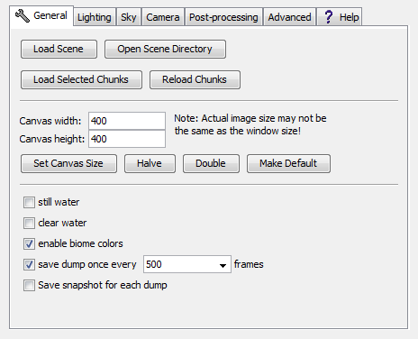

Search Documentation
Search Documentation
- About
 Gallery
Gallery- Getting Started
- User Interface
- Documentation
- Community
- Resources
Render Controls — General
General | Lighting | Sky | Camera | Post-Processing | Advanced | Global

- Load Scene
- Lists saved scenes within the active directory. Click the desired scene to start loading it.
- Open Scene Directory
- Lists saved scenes within the active directory. Click the desired scene to start loading it.
- Load Selected Chunks
- Loads all chunks currently selected in the world overview. Be careful, as your current camera position will get reset to the center of the selected chunks every time you use this feature.
- Reload Chunks
- Reloads the chunks currently loaded in the renderer.
- Canvas Width/Height
- Defines the resolution/size of the canvas via the width & height values in pixels. The default values are 400x400.
- Set Canvas Size
- Sets the canvas size to the values specified in the "Canvas width" & "Canvas height" fields found just above this button.
- Halve
- Cuts both the height and the width of the canvas in half, rounded down.
- Double
- Doubles the height and the width of the canvas.
- Make Default
- Sets the default canvas size of new scenes to the canvas size of current scene.
- Still Water
- Toggles whether water has ripples or not.
- Clear Water
- Toggles the "fog" which can be seen in water.
- Enable Biome Colors
- Toggles the display of biome specific colors.
- Save dump once every x frames
- This option will cause Chunky to save a dump (frame, scene and biome colours) once every fiftieth, hundredth, five hundredth, or thousandth frame. Default is 500th.
- Save snapshot for each dump
- When checked this option will save a image file when chunky saves dump files. Useful if you don't want to clutter your scene directory folder with lots of intermediate image files.